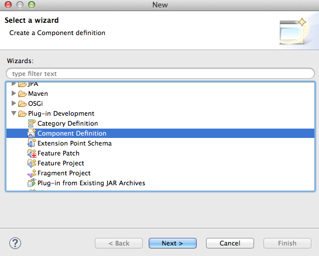

Configurable Application
Overview
This section provides a simple example of how to create an OSGi bundle that implements the ConfigurableComponent interface in Kura. This bundle will interact with the Kura ConfigurationService via the ConfigurableComponent interface. It also uses the MQTT services in Kura to connect to the Cloud, which allows for a local configuration mechanism using a Web user-interface (UI). In this example, you will learn how to perform the following functions:
-
Create a plugin project
-
Implement the ConfigurableComponent interface
-
Use the Kura web UI to modify the bundle’s configuration
-
Export a single OSGi bundle (plug-in)
Prerequisites
-
Requires Kura development environment set-up (Setting up Kura Development Environment)
-
Implements the use of Kura web user-interface (UI)
Configurable Component Example
Create Plug-in
In Eclipse, create a new Plug-in project by selecting File | New | Project. Select Plug-in Development | Plug-in Project and click Next.

Your screen should display the New Plug-in Project dialog box as shown in the following screen capture. Enter your project a name, such as “org.eclipse.kura.example.configurable”. Under Target Platform, ensure that the an OSGi framework option button is selected and set to standard as shown below. You can also (optionally) add projects to a working set. To continue, click Next.

In the next New Plug-in Project menu (shown below), change the Name field to something more descriptive, such as “Configurable Component Example.” Make sure that the Execution Environment list is set to match the JVM version running on the target device (JavaSE-1.6 or JavaSE-1.7). To determine the JVM version running on the target device, log in to its administrative console and enter the command
java –version
Also, uncheck the Generate an activator, a Java class that controls the plug-in’s life cycle option button. For the purposes of this example, a single class will be used. An Activator class will not be created; instead, OSGi Declarative Services will be used to start and stop the bundle.
Finally, click Finish.

You should see the new project in the Package Explorer (or Project Explorer) in Eclipse. Also, you will see the MANIFEST.MF was automatically opened in the Manifest Editor. An OSGi bundle is a regular Java .jar file that contains Java code and resources and a custom Manifest and an Activator. The manifest will be modified in the next section.
Add Dependencies to Manifest
First, you will use the Manifest Editor in Eclipse to add some dependencies. Click the Dependencies tab at the bottom of the editor screen and then click the Automated Management of Dependencies heading to expand it.

Under Automated Management of Dependencies, click Add. In the Select a Plug-in field, enter org.eclipse.osgi.services. Select the plug-in name and click OK.

Note that this operation is very much like adding standalone jars to the buildpath by including the ‘-cp’ argument to javac. However, in this case you are telling Eclipse where to find these dependencies the “OSGi way”, so it is aware of them at compile time.
Click Add again and use the same procedure to add the following dependencies:
- slf4j.api
- org.eclipse.kura.api
You should now see the list of dependencies. Save changes to the Manifest.

Create Java Class
Now you are ready to start writing a simple Java class. Right-click the org.eclipse.kura.example.configurable project. Select New | Class. Set the Package field to org.eclipse.kura.example.configurable, set the Name field to ConfigurableExample, and then click Finish.

Write the following code for the new class. You can copy and paste the code provided below into your newly created Java class file.
package org.eclipse.kura.example.configurable;
public class ConfigurableExample implements ConfigurableComponent {
private static final Logger s_logger = LoggerFactory.getLogger(ConfigurableExample.class);
private static final String APP_ID = "org.eclipse.kura.example.configurable.ConfigurableExample";
private Map<String, Object> properties;
protected void activate(ComponentContext componentContext) {
s_logger.info("Bundle " + APP_ID + " has started!");
}
protected void activate(ComponentContext componentContext, Map<String, Object> properties) {
s_logger.info("Bundle " + APP_ID + " has started with config!");
updated(properties);
}
protected void deactivate(ComponentContext componentContext) {
s_logger.info("Bundle " + APP_ID + " has stopped!");
}
public void updated(Map<String, Object> properties) {
this.properties = properties;
if(properties != null && !properties.isEmpty()) {
Iterator<Entry<String, Object>> it = properties.entrySet().iterator();
while (it.hasNext()) {
Entry<String, Object> entry = it.next();
s_logger.info("New property - " + entry.getKey() + " = " +
entry.getValue() + " of type " + entry.getValue().getClass().toString());
}
}
}
}
The activate() method is the entry point when the bundle is started.
Note this class has two forms of the activate() method. The second
method (with the “Map
Resolve Dependencies
At this point, there will be errors in your code because of unresolved imports.
Select the menu Source | Organize Imports to resolve these errors. Because you added dependencies to your dependency list in the Manifest, you will be prompted to choose one of the following two potential sources for importing a few classes.
For the “Entry” class, select java.util.Map.Entry as shown below and click Next.

For the “Logger” class, select org.slf4j.Logger as shown below and click Finish.

Resolving the imports should clear the errors in the class as shown in the screen capture that follows. Save the changes to the ConfigurableExample class.

The complete set of code (with import statements) is shown below.
package org.eclipse.kura.example.configurable;
import java.util.Iterator;
import java.util.Map;
import java.util.Map.Entry;
import org.osgi.service.component.ComponentContext;
import org.slf4j.Logger;
import org.slf4j.LoggerFactory;
import org.eclipse.kura.configuration.ConfigurableComponent;
public class ConfigurableExample implements ConfigurableComponent {
private static final Logger s_logger = LoggerFactory.getLogger(ConfigurableExample.class);
private static final String APP_ID* = "org.eclipse.kura.configurable.ConfigurableExample";
private Map<String, Object> properties;
protected void activate(ComponentContext componentContext) {
s_logger.info("Bundle " + APP_ID + " has started!");
}
protected void activate(ComponentContext componentContext, Map<String, Object> properties) {
s_logger.info("Bundle " + APP_ID + " has started with config!");
updated(properties);
}
protected void deactivate(ComponentContext componentContext) {
s_logger.info("Bundle " + APP_ID + " has stopped!");
}
public void updated(Map<String, Object> properties) {
this.properties = properties;
if(properties != null && !properties.isEmpty()) {
Iterator<Entry<String, Object>> it = properties.entrySet().iterator();
while(it.hasNext()) {
Entry<String, Object> entry = it.next();
s_logger.info("New property - " + entry.getKey() + " = " +
entry.getValue() + " of type " + entry.getValue().getClass().toString());
}
}
}
}
Switch back to the Manifest Editor. Under Automated Management of Dependencies, ensure the Import-Package option button is selected. Click the add dependencies link to automatically add packages to the dependencies list (under Imported Packages) based on the “import” statements in your example code. Save changes to the Manifest again.

Create Component Class
Right-click the example project and select New | Folder. Create a new folder named “OSGI-INF”.
Now, right-click the example project’s “OSGI-INF” folder and select New | Other. From the wizard, select Plug-in Development | Component Definition and click Next.

Next to the Class field, click Browse and type the name of your newly created class in the Select entries field. In this case, type the word “Configurable”, and you will see matching items. Select the ConfigurableExample class and click OK.

In the Enter or select the parent folder field, make sure “/OSGI-INF” is at the end of the existing entry (e.g., org.eclipse.kura.example.configurable/OSGI-INF). Set the Name field equal to the Class field as shown below:

Click Finish.
After the Component class has been created, it will open in the Workspace. On the Services tab, click the Add button under Provided Services. Enter “configurable” and select the interface “org.eclipse.kura.example.configurable”. This is required for components that are configurable through the Kura ConfigurationService, so that they expose a Service.

In the Overview tab, the Name and Class fields should already point to your Java class. Make the following settings:
-
Set the Activate field to activate and set the Deactivate field to deactivate. This tells the component where these OSGi activation methods are located.
-
Set the Configuration Policy to require.
-
Set the Modified field to updated. This tells the component which method to call when the configuration is updated.
-
Uncheck the box This component is enabled when started, then check both boxes This component is enabled when started and This component is immediately activated.
Click the Add Property button. Enter a property with the name “service.pid” and value “org.eclipse.kura.example.configurable.ConfigurableExample” as shown in the screen capture below.

Verify that the completed Overview tab looks like the screen shot shown below and save the Component class definition file:

Check the Source tab of the component.xml file and carefully verify that each of the property values and tags match what is shown below:
<?xml version="1.0" encoding="UTF-8"?>
<scr:component xmlns:scr="http://www.osgi.org/xmlns/scr/v1.1.0"
activate="activate"
configuration-policy="require"
deactivate="deactivate"
enabled="true"
immediate="true"
modified="updated"
name="org.eclipse.kura.example.configurable.ConfigurableExample">
<implementation class="org.eclipse.kura.example.configurable.ConfigurableExample"/>
<service>
<provide interface="org.eclipse.kura.example.configurable.ConfigurableExample"/>
</service>
<property name="service.pid" type="String" value="org.eclipse.kura.example.configurable.ConfigurableExample"/>
</scr:component>
If Kura 3.0 or newer versions are used and the "org.eclipse.kura.core.configuration.legacyServiceTracking" system property is set to false or not set, proceed as follows.
After the Component class has been created, it will open in the Workspace. On the Services tab, click the Add button under Provided Services. Enter “configurable” and select the interface “org.eclipse.kura.configuration.ConfigurableComponent”. This is required for components that are configurable through the Kura ConfigurationService, so that they expose a Service.

In the Overview tab, the Name and Class fields should already point to your Java class. Make the following settings:
-
Set the Activate field to activate and set the Deactivate field to deactivate. This tells the component where these OSGi activation methods are located.
-
Set the Configuration Policy to require.
-
Set the Modified field to updated. This tells the component which method to call when the configuration is updated.
-
Uncheck the box This component is enabled when started, then check both boxes This component is enabled when started and This component is immediately activated.
Click the Add Property button. Enter a property with the name “service.pid” and value “org.eclipse.kura.example.configurable.ConfigurableExample” as shown in the screen capture below.
Verify that the completed Overview tab looks like the screen shot shown below and save the Component class definition file:
Check the Source tab of the component.xml file and carefully verify that each of the property values and tags match what is shown below:
<?xml version="1.0" encoding="UTF-8"?>
<scr:component xmlns:scr="http://www.osgi.org/xmlns/scr/v1.1.0"
activate="activate"
configuration-policy="require"
deactivate="deactivate"
enabled="true"
immediate="true"
modified="updated"
name="org.eclipse.kura.example.configurable.ConfigurableExample">
<implementation class="org.eclipse.kura.example.configurable.ConfigurableExample"/>
<service>
<provide interface="org.eclipse.kura.configuration.ConfigurableComponent"/>
</service>
<property name="service.pid" type="String" value="org.eclipse.kura.example.configurable.ConfigurableExample"/>
</scr:component>
Create the Default Configuration
With the component definition file created, you also need to specify the configurable parameters of this bundle. This is done using the “metatype” definition. Right-click the OSGI-INF directory for the example project in the Package Explorer window and select New | Folder. Name the folder “metatype”. Next, right-click the metatype folder and select New | File.
Name the file “org.eclipse.kura.example.configurable.ConfigurableExample.xml” as shown in the following screen capture:

At this point, you have to write the ‘metatype’ file that defines the parameters, default values, types, etc. Click on the Source button and paste the following XML text into ConfigurableExample.xml for this example. Save changes to ConfigurableExample.xml.
<?xml version="1.0" encoding="UTF-8"?>
<MetaData xmlns="http://www.osgi.org/xmlns/metatype/v1.2.0" localization="en_us">
<OCD id="org.eclipse.kura.example.configurable.ConfigurableExample"
name="ConfigurableExample"
description="This is a sample metatype file for a simple configurable component">
<AD id="param1.string"
name="param1.string"
type="String"
cardinality="0"
required="true"
default="Some Text"
description="String configuration parameter"/>
<AD id="param2.float"
name="param2.float"
type="Float"
cardinality="0"
required="false"
default="20.5"
min="5.0"
max="40.0"
description="Float configuration parameter"/>
<AD id="param3.integer"
name="param3.integer"
type="Integer"
cardinality="0"
required="true"
default="2"
min="1"
description="Integer configuration parameter"/>
</OCD>
<Designate pid="org.eclipse.kura.example.configurable.ConfigurableExample">
<Object ocdref="org.eclipse.kura.example.configurable.ConfigurableExample"/>
</Designate>
</MetaData>
In the MANIFEST.MF of this bundle, you must also make sure the XML file gets packaged into the bundle when you export the plug-in. Click the Build tab, and in the Binary Build section of the Manifest editor verify that all the checkboxes for items under META-INF and OSGI-INF are checked. Save the Manifest after making this change.

Run the Bundle
At this point, you can run the bundle using the emulator in Eclipse (Linux or OS X only). To do so, expand the org.eclipse.kura.emulator project in the package explorer and browse to src/main/resources. As appropriate for you platform type, right-click Kura_Emulator_[OS].launch (where “[OS]” specifies your operating system) and select Run as | KURA_EMULATOR_[OS].launch. Doing so will start the Kura emulator and your new bundle in the console window of Eclipse.
View the Bundle Configuration in the Local Web UI
With the bundle running, open a browser window on the same computer as the Eclipse development environment and browse to the Kura web UI at http://127.0.0.1:8080. Once connected to the Kura web UI, a log in window appears prompting you to enter the Name and Password as shown below:

Enter the appropriate name and password (default is admin/admin) and click Log in. The Kura Admin web UI appears with the ConfigurableExample in the Services area on the left side of the browser window as shown below:

From the Kura Admin web UI, you can change the parameters that are used by the Kura configuration manager and in turn call the updated() method of the newly created bundle. To do so, click ConfigurableExample and the configurable component parameters will be displayed as shown below:

Make any necessary changes and click the Apply button near the top left of the configuration pane for the modifications to take affect. Every time a change is made to the configuration, a new snapshot is generated along with an ID.